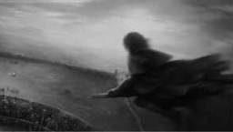

-Pani Susan Hickinbottom, 62 lata:"A spierdalaj dzieciaku przecież zakupy niosę."
-Pan Michelle Lovemore, 28 lat: "Nie wiem, jednak wiem coś innego, mój sąsiad jest wilkołakiem."
-Pan Philip Szczesniak, 34 lata: "Chcę mieć duży dom, pełen cudzych żon, słyszysz? No nic, cały dom w marmurze, cały dom w marmurze."
Finał Ligi Mistrzów Quidditcha rozstrzygnięty

Lomoty z Banchory mimo gry na swoim terenie przegrały z Bombardierami z Bigonville w finale wynikiem 250-110. Szukający złapał znicz po 78 minutach gry, a tlum oszalal po tej niesamowitej chwili. Puchar został jednak skradziony, a więc replika dotrze do drużyny w przyszłym tygodniu.
Trzy Miotly poszukują dwoch czarodziejów na stanowisko kelnera-barmana. obowiązkowe jest skończenie 18-letniego życia i posiadanie wiedzy na temat magicznego alkoholu oraz ocena Powyżej oczekiwań z Eliksirów.
Minister Magii podpisał ustawę dla wsparcia socjalnego
Andrew Jones podpisał wcześniej przegłoso-
waną przez Senat ustawę o wsparcie socjalne dla biednych czarodziejów. od teraz obywa-
tele, którzy zostaną wpisani na specjalna lista będą wspierani finansowo, a dzieci z takich rodzin będą miały prawo do darmowych podręczników do Hogwartu. Czy to była jego ostatnia podpisana ustawa przed wyborami?
waną przez Senat ustawę o wsparcie socjalne dla biednych czarodziejów. od teraz obywa-
tele, którzy zostaną wpisani na specjalna lista będą wspierani finansowo, a dzieci z takich rodzin będą miały prawo do darmowych podręczników do Hogwartu. Czy to była jego ostatnia podpisana ustawa przed wyborami?